Depreciacion Fiscal - INPC
Este modulo permite adaptar las depreciaciones fiscales ofrecidas por Banxico (INPC).
Se basan en porcentajes proporcionados por la ley, y en la página de Banxico.
El Catalogo de precios al consumidor se debera estar alimentando por medio del Catalogo en Contabilidad --> Configuracion --> Precios al Consumidor --> Catalogo INPC
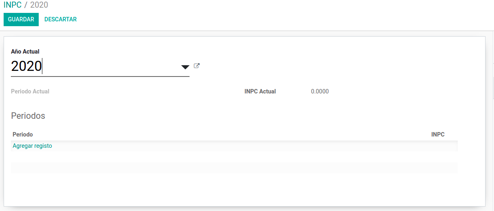
Debemos alimentar la información brindada por la pagina oficial de Banxico e INEGI:
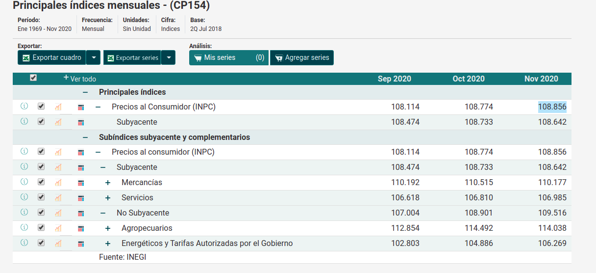
En Odoo quedaria:
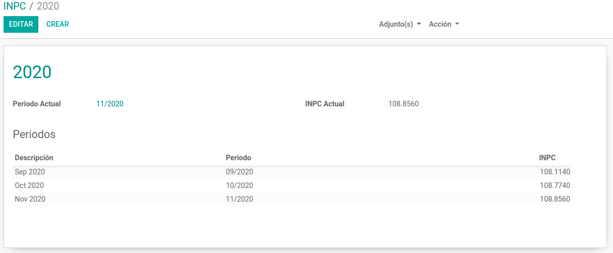
En el catalogo de activos quedaria reflejada la informacion en la pestaña --> Precios al consumidor:
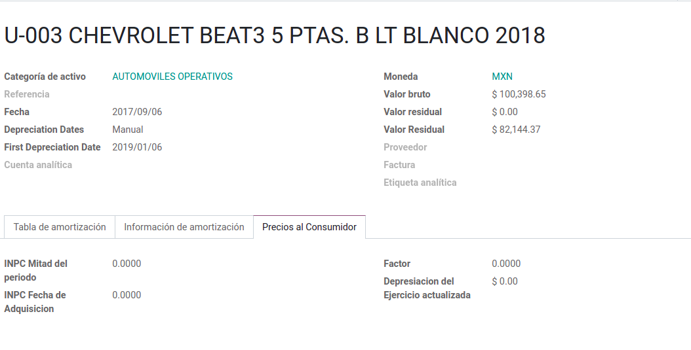
Funcionamiento
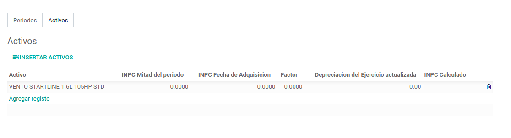
Seleccionamos los Activos y pulsamos Insertar:
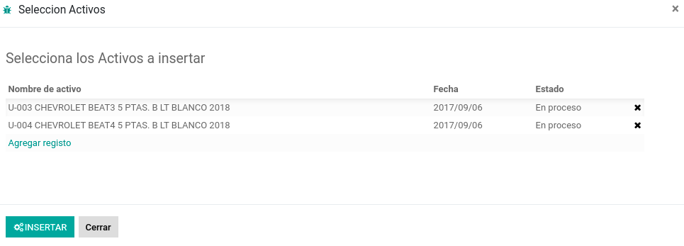
Al añadir el activo podemos ingresar la inforamción referente al INPC de adquisición y mitad del periodo, inclusive ingresar el factor :
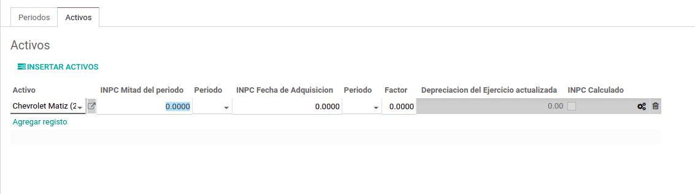
Podemos calcular manualmente los valores de los activos del Año que estamos depreciando, podemos pulsar el botón -> Calcular INPC para activos:

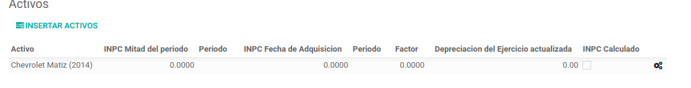
Las acciones anteriores actualizaran la información de la ficha del activo:
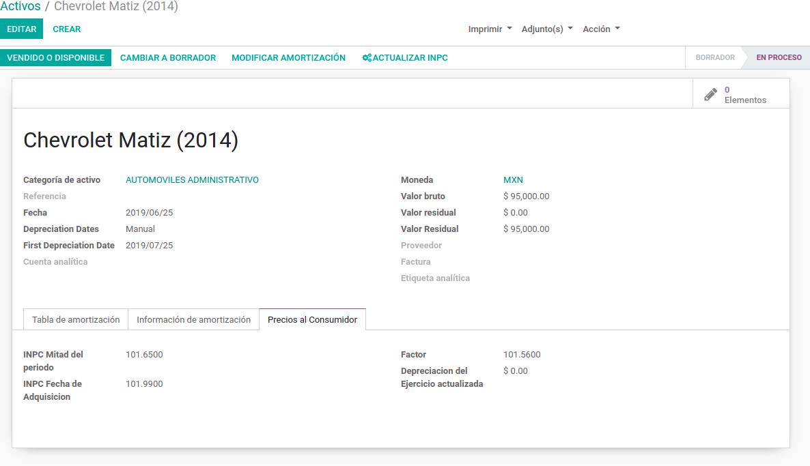
Para la automatización del calculo de los datos para los periodos del INPC existe una accion planificada que se ejecutara cada mes para tratar de calcular la informacion en el Año que estamos depreciando:
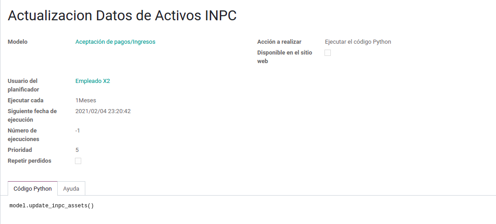
Las unicas acciones necesarias son abrir el Año del catalogo INPC y tener los activos seleccionados.
Notas:
- ★
Al calcular los valores para el INPC para:
- Mitad Periodo
- Fecha de Adquisición
- ★ El año que estamos calculando debera estar en estado 'Proceso' y solo puede estar abierto un registro a la vez. Esto nos ayuda a evitar errores durante el calculo y que la información sea mas precisa.
Reportes
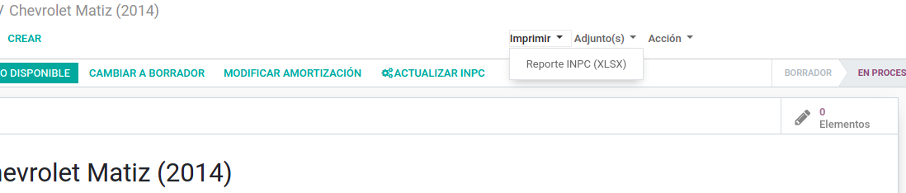